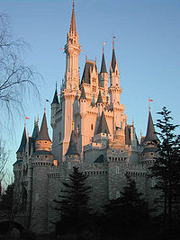
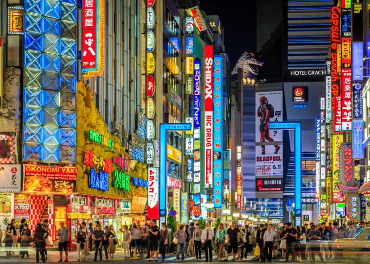
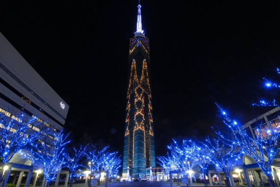

도쿄 디즈니랜드
도쿄 디즈니랜드는 일본 도쿄 근교의 지바현 우라야스 시에 위치한 46만 5천 제곱미터 규모의 테마 파크이다. 미국 이외의 지역에서 건설된 첫 디즈니랜드로, 1983년 4월 15일 개장하였다. 월트 디즈니 이매지니어링이 캘리포니아의 디즈니랜드와 플로리다의 매직 킹덤과 같은 양식으로 건설한 공원이다. 주식회사 오리엔탈 랜드가 월트 디즈니 컴퍼니로부터 라이선스를 취득하여 있다. 공동 운영하는 도쿄 디즈니씨와 함께 유일하게 월트 디즈니 컴퍼니가 소유하지 않는 디즈니 공원이다. 도쿄 디즈니 랜드에는 각기 다른 테마로 나뉜 구역이 일곱 개 있고 그것들을 「테마랜드」라고 부른다. 각 테마랜드에 배치되는 어트랙션이나 물건 파는 상점, 음식점 및 장식류는 각 테마에 맞춰서 이미지가 통일되게 도모되고 있다. 원내의 시설은 어트랙션이외의 설비또한 모두 OCL직영이다. 파크 내에는 숍, 레스토랑, 서비스시설이 다수 존재한다.
원래는 성인 1명, 1데이 패스포트 기준으로 5,000엔 대였으나 입장료가 올라 현재는 성인 기준 7,400엔을 받는다.
<티켓종류>
어른[1] (만 18세 이상) 청소년(중 ∙ 고등학생[2])(만 12세∼17세) 어린이(유아 ∙ 초등학생[3][4])(만 4세∼11세)
1데이 패스포트 ¥7,400 ¥6400 ¥4,800
시니어 패스포트 (만 60세 이상인 분) ¥6700 - -
2데이 패스포트 ¥13,200 ¥11600 ¥8600
3데이 매직패스포트 ¥17800 ¥15500 ¥11500
4데이 매직패스포트 ¥22400 ¥19400 ¥14400
스타라이트 패스포트 [5] ¥5400 ¥4700 ¥3,500
애프터6 패스포트 [6] ¥4200 ¥4200 ¥4200
단체 패스포트[7] ¥5,600 ¥4,800 ¥3,800
어른[1] (만 18세 이상) 청소년(중 ∙ 고등학생[2])(만 12세∼17세) 어린이(유아 ∙ 초등학생[3][4])(만 4세∼11세)
1데이 패스포트 ¥7,400 ¥6400 ¥4,800
시니어 패스포트 (만 60세 이상인 분) ¥6700 - -
2데이 패스포트 ¥13,200 ¥11600 ¥8600
3데이 매직패스포트 ¥17800 ¥15500 ¥11500
4데이 매직패스포트 ¥22400 ¥19400 ¥14400
스타라이트 패스포트 [5] ¥5400 ¥4700 ¥3,500
애프터6 패스포트 [6] ¥4200 ¥4200 ¥4200
단체 패스포트[7] ¥5,600 ¥4,800 ¥3,800

신주쿠
신주쿠는 우리나라 강남처럼 계획에 의해 발전한 부도심이다. 급속한 경제발전을 이룬 일본의 모습을 한눈에 실감할 수 있는 일본 최대의 번화가다. 비즈니스, 쇼핑, 유흥의 중심지이자 많은 철도가 지나가는 교통의 요지로 도쿄의 심장이라고 할 수 있다. 특히, 도쿄 제일의 교통량을 자랑하는 신주쿠역은 버스, 철도, 지하철의 수많은 노선이 집중하는 교차점이며 철도역으로서는 세계에서 가장 많은 승객 수를 기록하는 역이기도 하다.
도쿄도청 소재지이며 도쿄의 23개 특별구 중 재일교포를 포함한 외국인이 가장 많이 살고 있는 곳이다. 멋스러운 일본의 전통은 찾아볼 수 없지만, 대형 빌딩과 고급 백화점, 이국적인 쇼핑가와 현대식 거리를 자랑한다. 일본을 찾는 젊은 여행객의 필수 관광지로 사랑받고 있다. 시원시원한 거리 배치와 다양한 안내판 덕분에 이곳을 처음 찾는 여행자라도 길을 헤매는 일은 드물다.
202m 높이의 도쿄도청은 행정기관이기도 하지만 훌륭한 전망대로도 유명하다. 도쿄도청에서 보는 야경도 추천할 만하다. 게다가 도쿄도청 관광정보센터에서는 지도와 관광 정보를 무료로 제공하므로 한번쯤 들러보는 것이 좋다.
신주쿠역을 중심으로 동쪽의 히가시신주쿠와 서쪽의 니시신주쿠로 나뉜다. 히가시신주쿠가 우리나라의 대학가를 연상케 하는 젊음과 쇼핑의 거리라면, 니시신주쿠는 대형 빌딩이 들어서 있는 오피스타운이다. 선술집에서 꼬치구이를 먹으며 소박한 시간을 보내고 싶으면 히가시신주쿠를, 고층빌딩에 올라 낭만적인 야경을 감상하거나 호텔 스카이라운지에서 우아한 시간을 보내고 싶으면 니시신주쿠를 추천한다.
특히 니시신주쿠의 고층빌딩에서 보는 야경은 신주쿠의 명물로서 볼 만한 가치가 있다.
도쿄도청 소재지이며 도쿄의 23개 특별구 중 재일교포를 포함한 외국인이 가장 많이 살고 있는 곳이다. 멋스러운 일본의 전통은 찾아볼 수 없지만, 대형 빌딩과 고급 백화점, 이국적인 쇼핑가와 현대식 거리를 자랑한다. 일본을 찾는 젊은 여행객의 필수 관광지로 사랑받고 있다. 시원시원한 거리 배치와 다양한 안내판 덕분에 이곳을 처음 찾는 여행자라도 길을 헤매는 일은 드물다.
202m 높이의 도쿄도청은 행정기관이기도 하지만 훌륭한 전망대로도 유명하다. 도쿄도청에서 보는 야경도 추천할 만하다. 게다가 도쿄도청 관광정보센터에서는 지도와 관광 정보를 무료로 제공하므로 한번쯤 들러보는 것이 좋다.
신주쿠역을 중심으로 동쪽의 히가시신주쿠와 서쪽의 니시신주쿠로 나뉜다. 히가시신주쿠가 우리나라의 대학가를 연상케 하는 젊음과 쇼핑의 거리라면, 니시신주쿠는 대형 빌딩이 들어서 있는 오피스타운이다. 선술집에서 꼬치구이를 먹으며 소박한 시간을 보내고 싶으면 히가시신주쿠를, 고층빌딩에 올라 낭만적인 야경을 감상하거나 호텔 스카이라운지에서 우아한 시간을 보내고 싶으면 니시신주쿠를 추천한다.
특히 니시신주쿠의 고층빌딩에서 보는 야경은 신주쿠의 명물로서 볼 만한 가치가 있다.

JR 신주쿠역 또는 지하철 도에이신주쿠·마루노우치·도에이오에도선 신주쿠역에서 바로 연결
후쿠오카 타워
쿠오카를 상징하는 후쿠오카 타워는 호크스 타운 서쪽의 시사이드 모모치 해변 지역 중앙에 위치한다. 1988년 후쿠오카 시 제정 100주년을 기념하기 위해 세웠다.
타워의 높이는 234m로, 해변에 세워진 타워로는 일본 제일의 높이를 자랑한다. 하프 미러(반투명 거울) 8,000여 장으로 둘러싸여 있어 ‘미러 세일(Mirror Sail)’이란 별명이 있다.
후쿠오카를 범선이라고 생각할 때 100주년을 맞은 후쿠오카의 새로운 출발과 안전한 항해를 기원하는 의미라고 한다. 123m 높이에 위치한 5층 전망대에서는 후쿠오카 시내와 하카타 만, 후쿠오카 야후오쿠 돔 등을 조망할 수 있다.
전망대까지는 고속 엘리베이터로 약 70초 소요되며, 올라갈 때 이용하는 고속엘리베이터가 유리로 되어 있어 유리와 철골로 된 타워의 내부를 구경할 수 있다.
밤에는 타워 전체에 조명을 밝혀 아름다운 장관을 연출하는데, 봄의 벚꽃, 여름의 은하수, 가을의 달, 겨울의 크리스마스트리 등 계절별로 다른 라이트업을 해 시민과 관광객의 사랑을 받고 있다. 밸런타인데이나 크리스마스 등 특별한 날에는 더욱 화려한 일루미네이션을 선보인다.
이곳은 연인들의 데이트 장소로도 인기 있는데, 3층 전망실에 마련된 꽃으로 장식된 하트 모양 조형물에 연인이 함께 손을 대면 사랑을 축복하는 종이 울리거나 이곳에서 판매하는 사랑의 열쇠를 걸어 영원한 사랑을 기약하는 등 소소한 이벤트를 즐길 수 있다. 특히, 원하는 날짜 일주일 전에 러브 일루미네이션 서비스를 예약하면 마치 영화의 주인공이 된 듯 두 사람만을 위한 일루미네이션을 감상하며 사랑을 확인할 수 있다.
<휴관일>
6월 마지막 주의 월요일과 화요일
타워의 높이는 234m로, 해변에 세워진 타워로는 일본 제일의 높이를 자랑한다. 하프 미러(반투명 거울) 8,000여 장으로 둘러싸여 있어 ‘미러 세일(Mirror Sail)’이란 별명이 있다.
후쿠오카를 범선이라고 생각할 때 100주년을 맞은 후쿠오카의 새로운 출발과 안전한 항해를 기원하는 의미라고 한다. 123m 높이에 위치한 5층 전망대에서는 후쿠오카 시내와 하카타 만, 후쿠오카 야후오쿠 돔 등을 조망할 수 있다.
전망대까지는 고속 엘리베이터로 약 70초 소요되며, 올라갈 때 이용하는 고속엘리베이터가 유리로 되어 있어 유리와 철골로 된 타워의 내부를 구경할 수 있다.
밤에는 타워 전체에 조명을 밝혀 아름다운 장관을 연출하는데, 봄의 벚꽃, 여름의 은하수, 가을의 달, 겨울의 크리스마스트리 등 계절별로 다른 라이트업을 해 시민과 관광객의 사랑을 받고 있다. 밸런타인데이나 크리스마스 등 특별한 날에는 더욱 화려한 일루미네이션을 선보인다.
이곳은 연인들의 데이트 장소로도 인기 있는데, 3층 전망실에 마련된 꽃으로 장식된 하트 모양 조형물에 연인이 함께 손을 대면 사랑을 축복하는 종이 울리거나 이곳에서 판매하는 사랑의 열쇠를 걸어 영원한 사랑을 기약하는 등 소소한 이벤트를 즐길 수 있다. 특히, 원하는 날짜 일주일 전에 러브 일루미네이션 서비스를 예약하면 마치 영화의 주인공이 된 듯 두 사람만을 위한 일루미네이션을 감상하며 사랑을 확인할 수 있다.
<휴관일>
6월 마지막 주의 월요일과 화요일

호스크 타운에서 도보 15분, 하카타역에서 버스를 타고 후쿠오카 타워 미나미구치역에서 하차